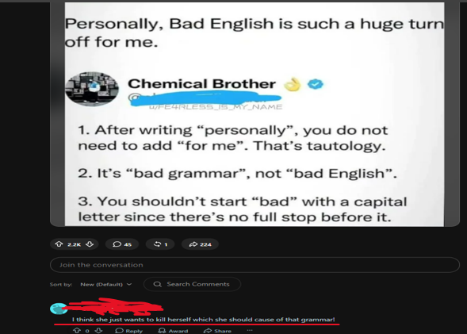
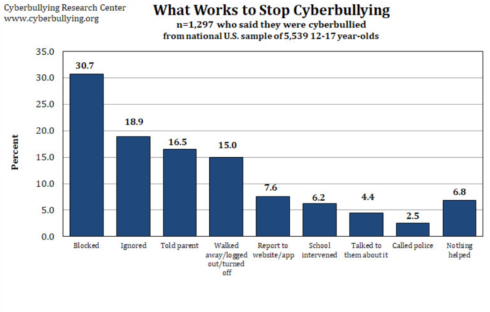

we specialize in spreading awareness of the dangers of cyberbullying

Image Vision: This Reddit comment mocking a person for their grammar and stating that they should cause their own death because of it is a clear show of cyber-bullying. This is an example of cyber-bullying because it uses online platforms to humiliate, insult, and emotionally harm another person. The comment is cruel and can make the victim feel worthless, embarrassed, or isolated. This can cause the victim to harm themselves, grief, and grow depression.

Image Vision: This image shows evidence from people who actually went through cyberbullying. The graph shows what worked to stop cyberbullying and what got them to have the load of there back.
about the creator I am an IB-student who created this site to inform other students and kids on cyberbullying and how harmful it can be. I did this site so I can reveal the bitter truth on how hard it is to escape the grasp of cyber bullying; I made it to stop kids from starting to bully others online and to teach victims on how to stop cyberbullying from getting its nasty grip on them. If you find any problems, bugs, or misinformation that you found on this website (article) please contact:
Contact us and we'll get back to you within 20 hours.
Chicago, US
+00 1515151515
Cyberbullyingstoppers@gmail.com